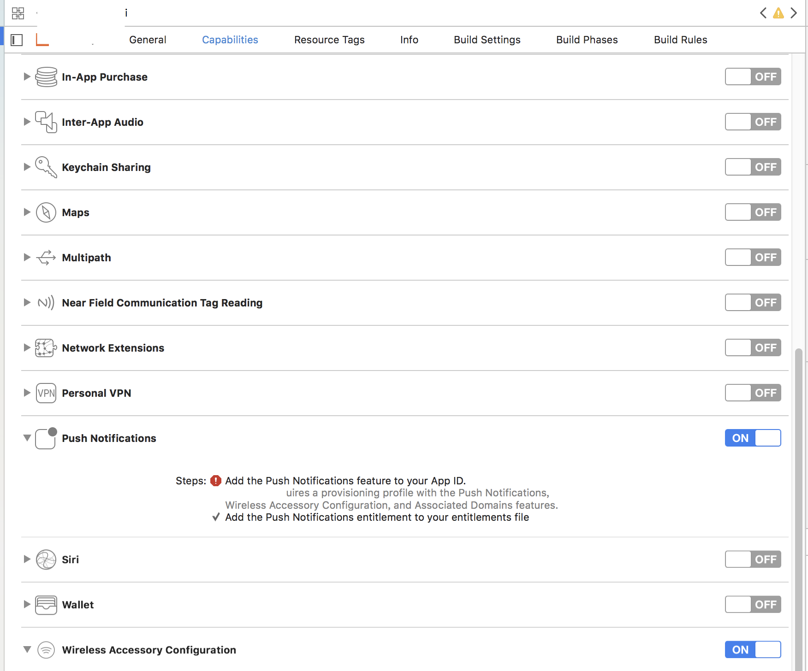

Xcode非开发者账号真机调试——权限问题脱坑手册
非开发者证书因权限问题，需要关闭Push Notifications、Associated Domains等权限才能真机调试。本文提供关于权限问题的统一解决方案。
前言
Xcode 7.2开始，苹果支持非开发者账号真机调试。关于如何使用，参考旧文《[iOS]Xcode非开发者账号真机调试教程》。
但从Xcode 8.2 开始出现一些问题，非开发者证书因权限问题，需要关闭Push Notifications、Associated Domains等权限才能真机调试。当时旧文中提供修改.xcodeproj的方法解决。但到了Xcode 9.4.2不生效了。本文提供关于权限问题的统一解决方案
问题原因
在Xcode 9.4.2，非开发者证书被隐藏了13项capabilities，见下图底部文案
经过长期、反复折磨，偶然发现证书选None时，所有capabilities都入口展示了，然后修改某个capabilities时，会弹窗选择一个证书。用此方法，可以关闭所有权限。
解决步骤
1.
开启非开发者账号真机调试，参考旧文《[iOS]Xcode非开发者账号真机调试教程》。
2.
选择非开发者证书（图中的team:xjk_001@163.com，本人邮箱）后，如图报错，因为没有Push Notifications、Associated Domains权限，此时切到capabilities看不到Push Notifications、Associated Domains入口，参见图1
3.
回到General，Team选择None，再切回capabilities，此时所有capabilities都展示了

4.
选择要关掉的capabilities，xcode弹窗让选择证书，此时选非开发者证书，可以关掉了
5.
循环以上方法，解决所有capabilities问题